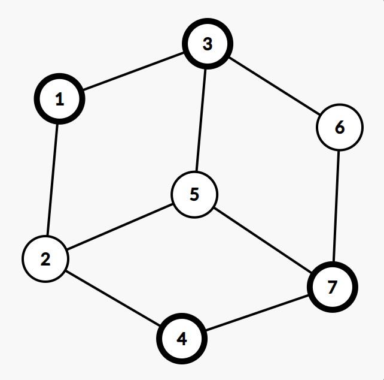
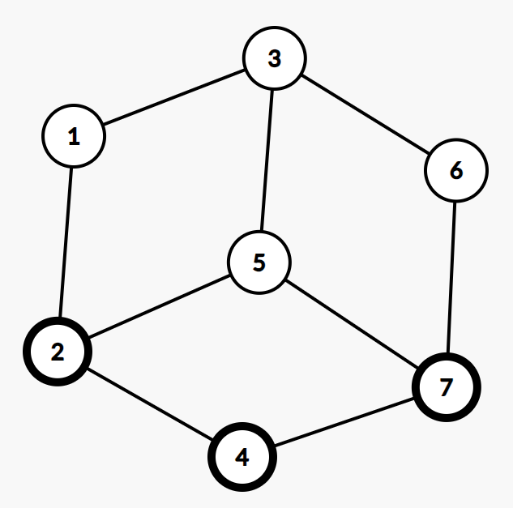
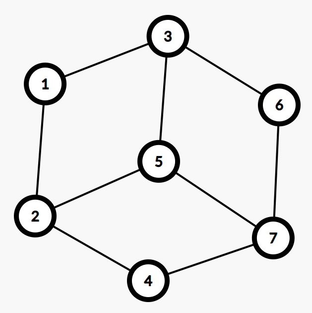

You are managing a neural network consisting of $$$N$$$ terminals connected by $$$M$$$ bidirectional links. Each terminal is currently either offline (0) or online (1). Triggering a reboot signal on terminal $$$u$$$ toggles the state of terminal $$$u$$$ and all terminals directly connected to it (changing 0 to 1 and 1 to 0). You are given $$$Q$$$ independent emergency scenarios, each providing the initial state of all $$$N$$$ terminals. For each scenario, find a set of terminals to reboot so that all $$$N$$$ terminals end up online (1), or determine that it is impossible.
The first line contains three integers $$$N$$$, $$$M$$$, and $$$Q$$$ ($$$1 \le N \le 3000$$$, $$$0 \le M \le 3000$$$, $$$1 \le Q \le 500$$$) — the number of terminals, the number of links, and the number of emergency scenarios.
Each of the next $$$M$$$ lines contains two integers $$$u$$$ and $$$v$$$ ($$$1 \le u, v \le N$$$, $$$u \neq v$$$) — an undirected link between terminals $$$u$$$ and $$$v$$$. It is guaranteed that no link appears twice.
Each of the next $$$Q$$$ lines contains a string of $$$N$$$ characters, each either 0 or 1; the $$$i$$$-th character denotes the initial state of terminal $$$i$$$ (0 — offline, 1 — online).
For each scencarios, output a single line:
— If it is impossible to make all terminals online, print -1.
— Otherwise, print an integer $$$K$$$ ($$$0 \le K \le N$$$), followed by $$$K$$$ distinct space-separated 1-indexed integers indicating the chosen terminals to operate on. If there are multiple valid solutions, you may output any.
7 9 51 21 32 42 53 53 64 75 76 70 0 0 1 1 1 11 0 1 1 0 0 11 1 1 1 1 1 10 0 0 0 0 0 01 1 1 1 1 1 0
1 1 2 1 3 0 2 3 4 -1
Consider the second query; this is the initial state of all terminals in the network (let all bold vertices represent online terminals):

Triggering a reboot signal on terminal 1:

Finally, triggering terminal 3 will result in the following state of the network:

Alternatively, you can trigger terminal 4 and 7 which also make all terminals online.